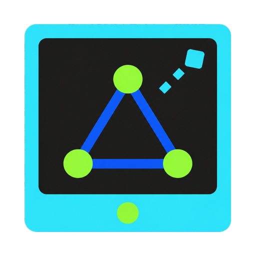
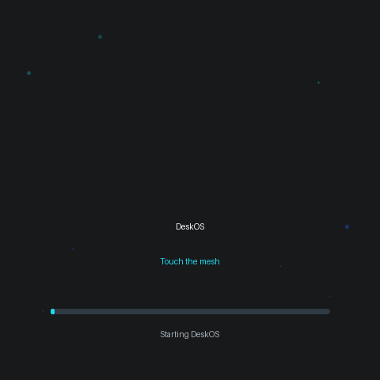
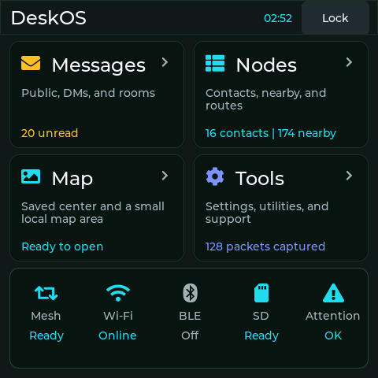
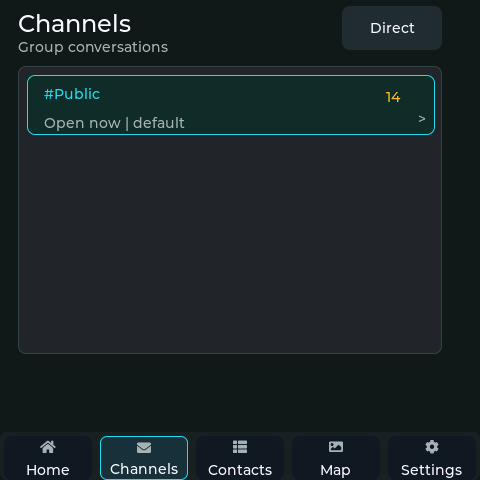
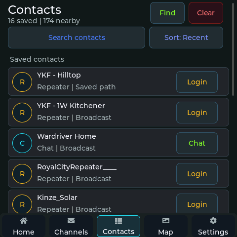
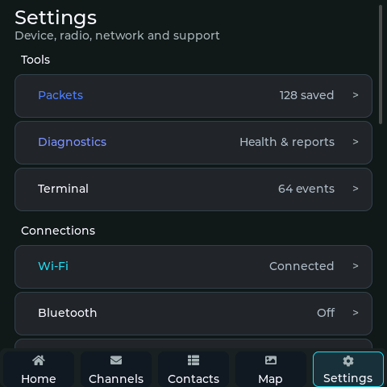

Remote repeater login
Sign-in requests use flood delivery, while authenticated commands retain the learned route. Status, telemetry, neighbours, access, tools, and room controls stay together.

DeskOSby CanadaverseProduction release 1.7.5
A bright, touch-first MeshCore desk for the SenseCAP Indicator D1L.
Everyday mesh, on a real desk
Messages, contacts, maps, repeater administration, radio settings, storage, diagnostics, and secure companion access live in one focused interface.
Sign-in requests use flood delivery, while authenticated commands retain the learned route. Status, telemetry, neighbours, access, tools, and room controls stay together.
Named neighbours, friendly ages, signal quality, visible progress, clear timeouts, and predictable Back and Close actions replace raw queued commands.
Ten-minute display sleep, top-button wake, deliberate double-press advert, fast cached maps, large controls, and a native 480 × 480 layout.
DeskOS never repeats other nodes, never formats your SD card, verifies signed local updates, and keeps USB as the recovery path.
A small computer with a clear identity
The opening animation is drawn from lightweight LVGL shapes on the D1L. The same electric cyan, cobalt, lime, and amber language carries through the complete interface.

Captured from the production device
These are direct RGB565 framebuffer captures from the physically flashed release, not browser mockups. Private messages, credentials, keys, and precise location data are excluded.




All four captures are 480 × 480, passed full-frame CRC verification, and report no public RF transmission or SD formatting during collection.
Exact release proof
The physical D1L reported version 1.7.5, full-feature profile, and build commit b719faaed93032211988c00b6a5c0c0ee74ef60b. The release package, checksums, RP2040 bridge, and installation notes are produced by the same successful GitHub Actions run.
Guided installation